LLM 时代的记忆：统一框架下的模块化架构与策略
针对 Agent 记忆方法大量涌现但缺乏统一分析框架、组件级剖析与同条件系统对比的问题，本文提出将记忆系统分解为 Information Extraction、Memory Management、Memory Storage、Information Retrieval 四个模块的统一框架，并在此框架下统一复现 12 种代表性方法（Mem0、MemTree、MemOS、MemoryOS、Zep、MemGPT 等），在 LOCOMO、LONGMEMEVAL 两个长期对话基准和 MemoryArena 一个 Agentic 记忆基准上评测，额外分析 token 成本、检索延迟、上下文扩展性、位置敏感性与 backbone 依赖。关键结论：树形/分层记忆组织整体表现强；抽取阶段保留原始消息对性能至关重要；backbone 从 9B 升到 27B 带来普遍大幅提升；上下文从 50% 扩到 200% 时几乎所有方法 F1 下降；Agentic 任务上现有方法成功率极低。作者据此组合 MemTree/MemOS 的树形组织、MemoryOS 的分层存储与段级处理，设计出在两个对话基准上整体最优、每对话开销低于 450 token 的新方法，并给出面向实践者的记忆架构选型路线图。
Agent 记忆方法众多，但存在三个空白：缺乏统一框架来系统分析各方法的实现组件；已有工作多只报告整体性能，很少检验方法内部单个组件的作用；不同方法在准确率与效率上缺少同一实验设置下的全面系统对比。
提出统一模块化框架，将 Agent 记忆系统分解为四个模块：❶ Information Extraction（从消息中抽取摘要/关键词/三元组等逻辑记忆记录）、❷ Memory Management（连接、整合、短期转长期、更新、过滤五类维护操作）、❸ Memory Storage（flat/hierarchical 组织 × vector/graph 表示）、❹ Information Retrieval（词法/向量/结构/混合检索）。在该框架下用 Python 统一复现 12 种代表性文本记忆方法，在 LOCOMO、LONGMEMEVAL、MemoryArena 上以 F1、BLEU-1、LLM-as-a-judge Accuracy、Task Success Rate/Progress Score 等指标评测，并开展 token 成本与检索延迟、上下文扩展性（50%~200%）、位置敏感性（Early/Middle/Late）、backbone 依赖、top-k 敏感性等多维分析；最后基于分析结论组合现有模块（MemTree/MemOS 的多粒度树形组织 + MemoryOS 的分层记忆 + 段级处理 + 基于访问频率与 recency 的热度晋升）设计新方法。
新方法在 LOCOMO 与 LONGMEMEVAL 上取得最佳整体性能，同时每对话 token 开销低于 450
组件消融：移除树形组织（Tree）使整体 F1 下降 4.39 分，移除段级处理（SP）下降 2.25 分；将 Tree 替换为 Graph 使 F1 从 43.40 降至 40.60，但 Graph 在时间推理类问题上更优
backbone 从 9B 扩到 27B：LONGMEMEVAL Multi-Session 上 MemTree 与 MemoryOS 提升超过 1.6×，LOCOMO Temporal 上 Mem0 与 MemOS 的 F1 提升超过 10 分
检索延迟：MemTree 最低（24.5 ms），LightMem 次低（78.1 ms）；查询期涉及 LLM 调用的方法延迟显著更高，Zep 平均 536.8 ms
上下文从 50% 扩展到 200%，几乎所有记忆架构 F1 持续下降；整体层面观察到明显的 recency bias
MemoryArena 上现有方法成功率普遍很低：Zep 最佳平均 SR 仅 12.45，多个方法在 Bundled Web Shopping 与 Group Travel Planning 上 SR 为 0
检索 top-k 从 1 增到 10 性能显著提升，超过 10 后收益边际化，故默认 k=10
Zep 在统一实验环境下两天内未能完成 LONGMEMEVAL 的记忆索引构建
与已有综述（仅做概念分类）和基准（仅做系统级评测）不同，本文将代表性记忆方法分解为可复用的四阶段模块，在统一实验设置下评测，并实证地把组件级设计选择与性能差异关联起来；作为实验分析的副产品，通过组合现有方法的模块得到新的 SOTA 方法；还给出面向 Information Persistence、Memory Association、Temporal Reasoning、Knowledge Update 四种能力的架构选型路线图。
相关度级别：high
命中能力域：3.1 上下文工程与记忆 | 3.5 评测与可靠使用
理由：直接命中团队 3.1（Agent 记忆系统、上下文组织与管理）与 3.5（评测基准与方法、成本与效率优化、AI 辅助工程实证研究）：论文给出记忆系统四模块统一框架和 12 种方法的同条件对比结论（保留原始消息、树形/分层组织优势、top-k=10、强 backbone 依赖、token 成本与延迟数据），可直接指导团队在多轮对话助手、知识库问答、长程 Agent 中选型与设计记忆/上下文模块；其评测方法学（LLM-as-a-judge 的不可靠性、答案简化消除冗长偏差、位置敏感性与上下文扩展性变体构造）也可直接复用到团队内部记忆功能的评测体系建设。
建议动作：深入精读并做内部分享
arXiv:2604.01707v3 [cs.CL] 2026年8月6日
Yanchen Wu ∗ 香港中文大学（深圳）
Xun Zhou 哈尔滨工业大学（深圳）
在面向长时程复杂任务（如多轮对话、游戏、科学发现）的基于大语言模型（LLM）的 Agent 中，记忆（memory）正成为核心模块，在这类任务中，记忆能够实现知识积累、迭代推理与自我进化。文献中已经提出了许多记忆方法。然而，这些方法尚未在相同的实验设置下得到系统且全面的比较。在本文中，我们首先从高层视角总结了一个统一框架，该框架涵盖了现有的代表性 Agent 记忆方法。随后，我们在两个长期对话基准测试（benchmark）和一个 agentic 记忆 benchmark 上对代表性的 Agent 记忆方法进行了广泛的比较，并检验了代表性方法的有效性，对这些方法进行了透彻的分析。作为我们实验分析的副产品，我们还利用现有方法中的模块设计了一种新的记忆方法，其性能超越了当前最先进的方法。最后，基于这些发现，我们指出了富有前景的未来研究机会。我们相信，对现有方法行为的更深入理解能够为未来研究提供有价值的新见解。
Yanchen Wu, Tenghui Lin, Yingli Zhou, Fangyuan Zhang, Qintian Guo, Xun Zhou, Sibo Wang, Xilin Liu, Yuchi Ma, and Yixiang Fang. LLM 时代的记忆：统一框架下的模块化架构与策略 [实验、分析与基准测试]. PVLDB, 19(1): XXX-XXX, 2026. doi:XX.XX/XXX.XX
源代码、数据及/或其他工件已发布于 https://github.com/Yanchen398/Memory-in-the-LLM-Era。
The development of Large Language Models (LLMs) like GPT-5 [95], Qwen3 [119], and Claude Sonnet 4.6 [3] has sparked a revolution in the field of artificial intelligence [22, 36, 57, 65, 78, 104, 106, 127]. Building on this success, LLM-powered agents have rapidly emerged and are being deployed across a wide range of domains,
∗ The first two authors contributed equally to this research.
† These authors jointly led this project.
This work is licensed under the Creative Commons BY-NC-ND 4.0 International License. Visit https://creativecommons.org/licenses/by-nc-nd/4.0/ to view a copy of this license. For any use beyond those covered by this license, obtain permission by emailing info@vldb.org. Copyright is held by the owner/author(s). Publication rights licensed to the VLDB Endowment.
Proceedings of the VLDB Endowment, Vol. 19, No. 1 ISSN 2150-8097. doi:XX.XX/XXX.XX
Tenghui Lin ∗ CUHK Sibo Wang CUHK
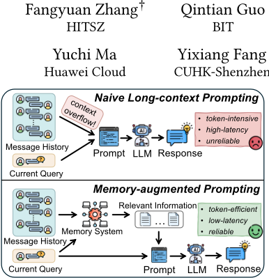
from industrial automation to personal assistance. For example, SWE-agent systems for software engineering tasks [121] and personal assistant agents such as OpenClaw [79] illustrate how LLMbased agents can autonomously plan, reason, and execute complex multi-step workflows. These agents are increasingly expected to operate autonomously, adapt to diverse environments, and support personalized interactions tailored to user needs. A key capability underlying such intelligent behavior is the memory mechanism [84, 124]. As illustrated in Figure 1, memory mechanisms allow agents to move beyond naive long-context prompting by maintaining and leveraging relevant information from past interactions. By equipping agents with memory mechanisms, they can accumulate experience over time, maintain contextual knowledge, and make more informed decisions-analogous to how humans rely on memory to learn from past experiences and guide future actions.
In recent years, a growing number of memory methods have been proposed to enhance the capability of LLM-based agents to retain, organize, and utilize historical information across interactions. These methods aim to enable agents to move beyond stateless reasoning and instead support long-term planning, personalization, and adaptive decision-making. Motivated by the limitations of stateless LLM agents and the growing need for persistent contextual reasoning, researchers from multiple communities-including databases, data mining, machine learning, and natural language processing-have begun developing efficient and scalable memory mechanisms for intelligent agents [42, 81, 82, 84, 89, 105, 107, 109, 110, 132]. In Table 1, we summarize twelve representative agent memory methods. We categorize them according to four key dimensions: information extraction mechanism, memory management strategy, underlying storage structure, and retrieval method. After a careful literature review, we make the following observations.
| Method | Information Extraction | Management Operations | Storage Structure | Retrieval Mechanism |
|---|---|---|---|---|
| A-MEM [115] MemoryBank MemGPT [82] Mem0 [12] Mem0 𝑔 [12] MemoChat [70] Zep [88] MemTree [89] MemoryOS [43] MemOS [58] MemGAS [116] | Direct archive, Summarization-based extract | Connect, Update Integrate, Update, Filter Integrate, Transform, Update Integrate, Update, Filter Connect, Update, Filter Integrate Connect, Transform, Update Connect, Integrate, Update Connect, Integrate, Transform, Connect, Integrate, Update | Flat, Vector Flat, Vector Hierarchical, Flat, Vector Flat, Graph Flat Hierarchical, Flat, Tree Hierarchical, Hierarchical, Tree | Vector-Based |
| [128] | Direct archive | Vector-Based | ||
| Direct archive | Vector | Lexical-Based, Vector-Based | ||
| Direct archive, Summarization-based extract | Vector-Based | |||
| Graph-based extract | Vector-Based, Structure-Based | |||
| Direct archive | LLM-Assisted | |||
| Direct archive, Graph-based extract | Graph | Lexical-Based, Vector-Based, Structure-Based | ||
| Direct archive | Vector-Based | |||
| Direct archive | Update, Filter | Vector | Lexical-Based, Vector-Based | |
| Direct archive, Summarization-based extract | Lexical-Based, Vector-Based | |||
| Direct archive, Summarization-based extract | Connect | Flat, Graph | Vector-Based, Structure-Based, LLM-Assisted | |
| LightMem [18] | Direct archive, Summarization-based extract | Integrate, Update, Filter | Hierarchical, Vector | Vector-Based |
| Method | Information Extraction | Management Operations | Storage Structure | Retrieval Mechanism |
首先，目前缺乏一个能够系统性地分析代表性 Agent 记忆方法实现组件的统一框架。其次，以往的大多数研究仅报告整体性能结果，却很少考察这些方法中各个组件的作用与效果。第三，不同方法之间——尤其是在准确性与效率方面——仍然缺乏全面而系统的比较。
我们的工作。我们通过提出一个统一的模块化框架，并对代表性 Agent 记忆方法开展深入的实验研究，来弥补上述空白。该框架将记忆机制分解为四个阶段，包括 ❶ 信息提取（Information Extraction）、❷ 记忆管理（Memory Management）、❸ 记忆存储（Memory Storage）和 ❹ 信息检索（Information Retrieval）。在该框架下，我们在两个典型的长期对话基准测试（benchmark）LOCOMO [72] 和 LONGMEMEVAL [111]，以及 Agent 记忆 benchmark MemoryArena [29] 上对代表性方法进行了比较。除整体性能之外，我们还分析了实际的鲁棒性维度，包括上下文可扩展性和位置敏感性。基于这些分析，我们进一步设计了一种新的 Agent 记忆方法，其实现了最佳的整体性能与成本效率。
综上所述，我们的主要贡献如下：
路线图。第 2 节介绍预备知识。第 3 节提出统一框架。第 4–7 节刻画该框架内的代表性设计选择。第 8 节报告实验结果与分析。第 9 节总结经验教训与机遇。第 10 节回顾相关工作，第 11 节总结全文。
在本节中，我们将梳理一些重要的概念，以及大语言模型（LLM）时代现有记忆方法的典型工作流程。此外，还讨论了检索增强生成（RAG）与记忆之间的关系。
下面我们介绍两个与 LLM 相关的基本概念。
LLM 提示（Prompting）。提示 [6, 13, 68] 通过构建一个包含任务指令、当前输入以及可选示例或辅助证据的输入上下文（提示）来指定 LLM 任务。模型的输出随后以该上下文为条件生成。
提示在基于 LLM 的系统中尤为重要，因为它为任务适配提供了一种轻量级、无需训练的接口 [68]。无需修改模型参数，仅通过修改输入上下文即可改变模型行为。这一特性催生了大量实际应用，在这些应用中，任务规范与约束可直接以自然语言表达 [1, 80]。除生成最终回复外，提示还常被用于驱动以 LLM 为中心的流水线中的中间子任务 [4, 45, 92, 122]。典型示例包括提取关键信息、整合中间结果等。
基于 LLM 的智能体（Agent）。基于 LLM 的 Agent 利用 LLM 作为核心决策模型来进行序贯动作选择 [54, 94, 122]。与单轮提示不同，Agent 以闭环方式运行：它接收观测，随后进行推理或规划，执行动作（可能借助工具），从环境中获取反馈，并继续进行下一步 [120]。交互历史与可用状态被组合为文本上下文，Agent 基于该上下文预测下一个动作。
基于 LLM 的 Agent 的动作空间通常既包括自然语言回复，也包括结构化的工具调用 [58, 82]（例如信息搜索、API 调用以及记忆读写操作），从而能够完成超越一次性生成的多步任务。因此，基于 LLM 的 Agent 必须跨对话轮次和会话保留并复用信息，这也正是有效记忆机制的动因所在。
2
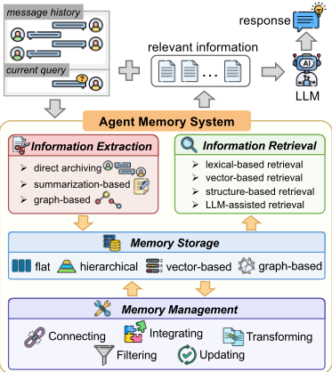
记忆被引入基于 LLM 的 Agent 中，以弥补上下文窗口的有限性 [31, 66, 72]。由于模型仅以有限数量的 token 为条件，来自较早轮次且位于当前提示之外的信息很容易丢失，这会降低长程对话和多会话任务的性能 [93, 111, 117]。显式记忆模块 [5, 24, 82, 84, 99] 使系统能够持久保存由交互产生的信息——例如用户偏好、显著事件、中间决策和任务约束——并在相关时重新引入这些信息，从而提升一致性，并支持依赖长期上下文的推理 [24, 84]。
记忆增强系统的典型工作流程首先从正在进行的交互中选择性提取重要信息——例如事实、用户偏好或重要事件——并将其存储为记忆条目。这些条目随后经历一系列管理操作：整合（consolidation）[15, 103, 128]，即融合相似的记忆以提高连贯性并减少冗余；更新（updating）[32, 67, 82]，即修改已存储的内容以保持准确性并反映最新知识；过滤（filtering）[55, 84, 128]，即移除过时、冗余或低效用的记忆，以保持系统的效率和相关性；以及增强（enhancement）[33, 100]，即标记或突出显示重要记忆，以便于识别和检索。这一结构化流程确保记忆系统保持有序、可扩展，并与持续变化的用户需求保持一致。当推理或生成需要额外上下文时，记忆系统会检索并向 LLM 提供最相关的信息，从而在不断演化的交互中同时支持短期适应与长期连续性。
记忆与检索增强生成（Retrieval-Augmented Generation, RAG）[21, 27, 48, 105] 是相关但不同的机制。记忆主要针对有状态的、依赖交互的信息，这类信息随时间演化，并且是个性化与跨会话连续性所必需的 [82, 128]。相比之下，RAG 主要针对外部知识接地，即从文档集合或知识库中检索证据，以补充领域知识并减少幻觉 [21, 48]。在实践中，二者是互补的：记忆提供用户和会话特定的上下文，而 RAG 则从外部语料库提供与任务相关的事实证据。
在本节中，我们在一个统一框架下将现有的 Agent 记忆系统分解为若干记忆模块，如图 2 所示。该框架由四个核心记忆模块组成：❶ 信息抽取、❷ 记忆管理、❸ 记忆存储以及 ❹ 信息检索。综合来看，这些模块共同刻画了现有 Agent 记忆系统在实际中的运作方式。
如算法 1 所示，在交互步骤 𝑡，令 M 𝑡 表示传入的消息，𝑞 𝑡 表示当前查询，D 𝑡 - 1 表示已有的逻辑记忆记录，H 𝑡 - 1 表示物化后的记忆状态。这四个模块的形式化定义如下
具体而言，❶ 信息抽取执行数据摄取与转换，将原始消息及其相关元数据（如时间戳）转换为逻辑记忆记录 E 𝑡。它过滤掉冗余细节，并将相关内容转换为适合下游处理的不同类型的知识（例如，由文本派生的三元组、信息摘要）。❷ 记忆管理对现有记忆状态 H 𝑡 - 1 执行增量维护。给定抽取得到的记录 E 𝑡，它生成一个变更集 Δ 𝑡，该变更集可能会连接相关记录、整合碎片化信息、跨记忆层级迁移记录、更新现有内容，或删除冗余和过时的条目。❸ 记忆存储将 Δ 𝑡 物化为更新后的持久化状态 H 𝑡 = ⟨D 𝑡 , P 𝑡 , I 𝑡 ⟩。其中，D 𝑡 包含逻辑记忆记录及其相关元数据，P 𝑡 规定了它们的扁平或层次化组织形式，I 𝑡 则维护基于向量或图的表示以及与之相关的索引和访问结构。❹ 信息检索在物化后的记忆状态 H 𝑡 上执行查询处理。给定当前查询 𝑞 𝑡，它识别候选记录，通过相应的索引或结构访问这些记录，并对它们的相关性进行排序，从而产生检索到的上下文 X 𝑡，供下游推理或响应生成使用。
This module serves to identify and extract information from M 𝑡 that is both useful and necessary for downstream memory processing. As illustrated in Figure 3, existing agent systems adopt different information extraction methods, which can be broadly categorized as follows:
Algorithm 1: Data management workflow of the unified agent memory framework
Input : Incoming messages 𝑀 𝑡 , query 𝑞 𝑡 , persistent memory state H 𝑡 - 1 = ⟨ D 𝑡 - 1 , P 𝑡 - 1 , I 𝑡 - 1 ⟩ , and module configurations Θ Output: Updated memory state H 𝑡 , retrieved context X 𝑡 , and response R 𝑡 // ❶ Information extraction 1 E 𝑡 ← Extract 𝜃 𝐸 ( 𝑀 𝑡 ) ; // construct logical memory records and metadata // ❷ Memory management 2 Δ 𝑡 ← Manage 𝜃 𝑀 ( H 𝑡 - 1 , E 𝑡 ) ; // connect, integrate, transform, update, or filter records // ❸ Memory storage 3 H 𝑡 ← Materialize 𝜃 𝑆 ( H 𝑡 - 1 , Δ 𝑡 ) ; // persist records and maintain organization and indexes // ❹ Information retrieval 4 X 𝑡 ← Retrieve 𝜃 𝑅 ( 𝑞 𝑡 , H 𝑡 ) ; // retrieve and rank relevant memory records 5 R ← GenerateResponse ( 𝑞 , X ) ;
return
( H
X
R
)
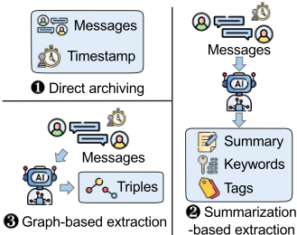
keywords and contextual tags from M 𝑡 , or prompt the LLM to produce an abstracted summary of the raw text. Figure 4 illustrates a representative prompt used for this extraction method.
记忆管理利用新提取的记录 E 𝑡 对已有的逻辑记忆记录 D 𝑡 - 1 进行增量式维护与精炼，产生一个变更集 Δ 𝑡，用于支配记忆随时间的演化方式。如图 5 所示，这一过程模拟了人类记忆的生命周期，涵盖五项核心操作：关联相关经验、整合碎片化信息、将短期记忆转化为长期记忆、更新过时内容以及过滤陈旧知识。表 2 总结了代表性的
通过提取显著关键词、识别核心主题与上下文要素，并分配相关的类别标签，对以下消息生成结构化分析。将响应格式化为 JSON 对象：{ "summary": "<一句话主旨>", "keywords": [ <若干捕捉关键概念的关键词> ], "tags": [ <若干用于分类的宽泛主题> ] } 待分析消息：{message}
Agent 记忆方法通过不同的实现范式来实例化这些操作。通过这一过程，系统维持一个连贯、高效且自适应的记忆状态，以支持持续学习与推理。
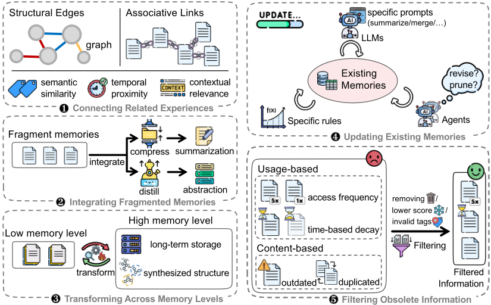
例如 Zep 将语义相关的记忆组织成社区，形成结构化、相互关联的长期表示。这一阶段在保持效率的同时强化了持久性知识。
冗余信息，这可以通过直接删除这些记忆、降低为其分配的权重分数，或应用状态标签（如 'invalid'）来实现。这一过滤过程与人类遗忘相类似，后者会选择性地淡忘未使用或无关的记忆。（1）基于使用情况的过滤（usage-based filtering），如 MemoryOS 和 MemoryBank 所示，依赖于访问频率和基于时间的衰减。创建时间久远且很少被检索的记忆会首先被过滤。（2）基于内容的过滤
记忆存储将变更集 Δ 𝑡 具体化为更新后的持久记忆状态 H 𝑡，并沿两个主要维度——以组织为中心和以表示为中心——支配逻辑记忆记录 D 𝑡 的组织与表示方式。前者决定了存储系统的架构深度，涵盖扁平存储与分层存储；后者刻画了所采用的技术范式，主要包括基于向量的存储与基于图的存储。
| Method | Connecting | Integrating | Transforming | Updating | Filtering |
|---|---|---|---|---|---|
| A-MEM MemGPT Mem0 Mem0 𝑔 MemoChat Zep MemTree MemoryOS MemOS MemGAS | Associative Links | N/A Summarization Summarization Summarization N/A Abstraction N/A Summarization + + N/A | N/A N/A Stage-wise Transfer N/A N/A N/A N/A Stage-wise N/A N/A | LLM-based Rule-based Agent-based Agent-based LLM-based N/A LLM-based LLM-based Rule-based Agent-based N/A | N/A Usage-based N/A N/A N/A N/A Usage-based N/A |
| MemoryBank | N/A | ||||
| N/A | |||||
| N/A | Content-based | ||||
| Structural Edges | Content-based | ||||
| N/A | |||||
| Structural Edges | Community Formation | ||||
| Structural Edges | |||||
| Associative Links | Abstraction Summarization | Transfer | |||
| Structural Edges | Abstraction Summarization | ||||
| Structural Edges | N/A | ||||
| LightMem | N/A | Summarization | N/A | Agent-based | Content-based |
| Method | Connecting | Integrating | Transforming | Updating | Filtering |
为三层分层结构：短期记忆用于即时对话，中期记忆用于主题摘要，长期记忆用于用户偏好。通过对各存储组件应用不同且协同的管理与检索策略，分层存储有效地优化了计算开销与知识持久性之间的权衡。
该模块在持久记忆状态 H 𝑡 上处理输入查询 𝑞 𝑡，通过识别并排序相关的记忆记录，生成检索到的上下文 X 𝑡，供下游推理或上下文感知的响应生成使用。现有的信息检索策略可根据其所采用的基本机制大致分为四种范式：
匹配，这种方式在检索名称、特定实体或措辞精确性至关重要的短语时尤为有效。
我们现在给出实验结果。我们在第 8.1 节中讨论实验设置，然后在第 8.2 节中报告多项实验的评估结果。
我们从三个维度对 Agent 记忆机制开展系统性的实验研究：(1) 我们在第 3 节所述的统一框架内收集并重新实现了 12 种代表性方法；(2) 我们在两个广泛使用的长期对话记忆基准测试（benchmark）和一个 Agent 记忆基准测试上，使用多种互补的指标进行了全面评估；(3) 我们开展了多维度分析以评估架构上的权衡与鲁棒性，涵盖 token 成本与检索延迟效率、真值（ground-truth）位置敏感性、上下文可扩展性以及大语言模型（LLM）骨干依赖性。
基准测试数据集。我们采用三个基准测试数据集来评估每种记忆机制的性能。为评估长期对话记忆能力，我们使用 LOCOMO [72] 和 LONGMEMEVAL [111]，它们分别代表两种不同的交互场景：人与人之间的对话以及用户与 AI 的交互。我们进一步使用 MemoryArena [29] 来评估 Agent-环境交互中的记忆机制。更多数据集细节在附录 B.1 中提供。由于 LONGMEMEVAL 具有可配置的结构，我们构建了特定变体来评估上下文可扩展性与位置敏感性。详细的变体构建方法在附录 B.2 中概述。
方法选择。我们聚焦于以文本为中心的 Agent 记忆方法，并基于相关性、时效性、可复现性与架构多样性来选择代表性方法。如表 1 和表 2 所总结，所选方法涵盖了四个记忆模块中的主要设计选择。更多方法选择细节在附录 F 中提供。
评估指标。对于对话类基准测试 LOCOMO 和 LONGMEMEVAL，我们遵循其评估协议以及关于长程对话记忆的先前研究，采用三种互补的指标。F1 通过平衡精确率与召回率来度量 token 级别的重叠。BLEU-1 捕捉带简短惩罚（brevity penalty）的 unigram 级修正精确率，反映对参考答案的词汇保真度。准确率（Accuracy）由一个 LLM 评判者（GPT-5.4-mini）进行评估，由其判断生成的答案是否与参考答案语义一致。LLM-as-a-judge 所用的具体提示词详见附录 A。
对于 Agent 基准测试 MemoryArena，我们遵循其官方评估协议，报告任务成功率（Task Success Rate, SR），该指标衡量完全完成的任务所占的比例；同时报告任务进度分数（Task Progress Score, PS），该指标基于任务判据的满足比例来衡量任务的部分完成程度。对于 Progressive Web Search，我们额外报告准确率（Accuracy），其以每个任务中最终搜索查询的正确性来度量；以及 #Search，其以用于回答最终整合查询的搜索工具调用次数来度量。
实现。我们在所提出的统一框架下使用 Python 实现了所有方法，并基于原始论文和公开可用的代码进行忠实且一致的重新实现。所有实验均在 8 块 NVIDIA A100（80 GB）GPU 上进行。若某个方法无法在两天内完成，我们会在表格中将其结果标记为 '-'。此外，由于 F1 和 BLEU-1 指标对答案的冗长程度高度敏感，我们对所有生成的答案应用了统一的简化步骤。该过程的具体提示词（prompt）及相关讨论分别详见附录 A 和附录 E。超参数设置。除非另有说明，我们使用 Qwen3.5-9B 作为默认的 LLM 骨干模型，因为它是一个能力强且易于获取的开源模型。最大上下文长度设置为 20,000 个 token，并采用贪心解码（greedy decoding）以确保输出具有确定性。对于所有涉及 top𝑘 检索的方法，我们遵循先前工作 [43, 89, 115]，并基于第 8.2 节（Exp.7）中的敏感性分析，设置 𝑘 = 10，以平衡检索效果与上下文长度。我们采用 all-MiniLM-L6v2——一个具有代表性且被广泛使用的 sentence-transformer 模型——作为所有方法统一的嵌入模型。其余所有方法特定的超参数均遵循其各自论文和代码库中报告的原始设置。
Exp.1. 总体性能。我们首先报告了所有 agent 记忆方法在两种模型规模（Qwen3.5-9B 和 Qwen3.5-27B）下于两个基准测试（benchmark）上的性能。LONGMEMEVAL 和 LOCOMO 上的结果分别如表 3 和表 4 所示。基于这些结果，我们得出以下观察：
（1）基于树的记忆方法（例如 MemTree 和 MemOS）通常通过以多层、多粒度的方式组织记忆来取得强劲的性能。具体而言，MemTree 在 LONGMEMEVAL 上取得了强劲的性能，而 MemOS 在 LOCOMO 上展现出了具有竞争力的结果。树结构在较高层提供高层次的概念性摘要，同时在叶节点保留细粒度的细节。类似的优势也可以通过精心设计的分层架构来实现，这类架构能够促进不同抽象层次之间高效的信息流动与转换，MemoryOS 和 Zep 极具竞争力的结果便是有力的例证。
（2）保持信息完整性对于有效的记忆持久化至关重要——具体而言，即在信息提取阶段保留原始消息，并在最终响应生成阶段纳入原始对话。例如，仅提取基于图的三元组的方法，与保留原始对话片段的方法相比，可能会遭受信息损失，这或许可以解释为什么 Mem0 在许多情况下优于 Mem0 𝑔。
（3）多会话与时间推理任务对骨干大语言模型（LLM）的推理能力仍然高度敏感。当将骨干模型从 9B 扩展到 27B 时，可以在不同的记忆架构上观察到显著的性能提升。具体而言，在 LONGMEMEVAL 的 Multi-Session 类别上，MemTree 和 MemoryOS 均取得了超过 1.6× 的性能提升；而在 LOCOMO 的 Temporal 类别上，Mem0 和 MemOS 的 F1 分数提升了 10 分以上。这些结果表明，更强的 LLM 推理能力能够显著惠及记忆密集型任务，同时也推动了对持久化信息上的复杂推理提供显式支持的记忆架构的发展。
Exp.2. Token 成本与检索延迟分析。在本实验中，我们评估各方法在记忆构建与检索两个阶段的效率。对于记忆构建，我们报告 token 消耗量而非运行时间，作为计算成本的代理指标，因为该阶段主要由 LLM 调用主导，且其运行时间对部署环境和系统条件高度敏感。具体而言，我们分析：(1) 性能与 token 成本之间的整体权衡，其中图 6a 绘制了每个对话的平均 token 成本与整体 F1 分数之间的关系；以及 (2) 构建可扩展性，其中图 6b 展示了随着摄入记忆量的增加，平均 token 消耗量如何演变。对于检索，表 5 报告了从记忆方法接收到查询开始，直至检索过程完成（即响应生成开始之前）的平均耗时。
| Method.Method.Method | Information.user.F1 | Information.user.BLEU-1 | Information.assistant.F1 | Information.assistant.Extraction BLEU-1 | Information.preference.F1 | Information.preference.BLEU-1 | Multi-Session..F1 | Multi-Session..BLEU-1 | F1 | BLEU-1 | Temporal Knowledge..F1 | Temporal Knowledge..BLEU-1 | Overall.Updates.F1 | Overall.Updates.BLEU-1 |
|---|---|---|---|---|---|---|---|---|---|---|---|---|---|---|
| Qwen3.5-9B | Qwen3.5-9B | Qwen3.5-9B | Qwen3.5-9B | Qwen3.5-9B | Qwen3.5-9B | Qwen3.5-9B | Qwen3.5-9B | Qwen3.5-9B | Qwen3.5-9B | Qwen3.5-9B | Qwen3.5-9B | Qwen3.5-9B | Qwen3.5-9B | Qwen3.5-9B |
| A-MEM | 40.15 | 35.99 | 43.51 | 36.02 | 11.72 | 0.91 | 17.08 | 14.58 | 22.91 | 16.47 | 31.91 | 29.05 | 26.81 | 21.92 |
| MemoryBank | 56.17 | 46.14 | 66.64 | 55.02 | 20.67 | 9.54 | 17.70 | 10.73 | 22.41 | 14.75 | 37.20 | 27.84 | 33.04 | 24.32 |
| MemGPT | 55.54 | 49.79 | 54.67 | 46.00 | 13.63 | 3.82 | 19.19 | 17.19 | 22.30 | 15.86 | 29.54 | 27.07 | 30.36 | 25.37 |
| Mem0 | 56.46 | 47.35 | 47.78 | 37.97 | 9.03 | 0.04 | 25.52 | 20.73 | 29.65 | 18.42 | 36.70 | 27.54 | 34.20 | 25.59 |
| Mem0 𝑔 | 55.56 | 48.44 | 22.93 | 18.25 | 11.85 | 0.47 | 30.71 | 28.41 | 35.45 | 27.13 | 40.86 | 33.42 | 35.03 | 28.84 |
| MemoChat | 12.37 | 6.01 | 31.00 | 23.37 | 10.69 | 0.91 | 21.85 | 17.94 | 31.36 | 21.03 | 11.25 | 8.41 | 21.75 | 15.19 |
| Zep | - | - | - | - | - | - | - | - | - | - | - | - | - | - |
| MemTree | 68.18 | 63.67 | 58.82 | 45.94 | 11.46 | 1.57 | 26.05 | 23.89 | 36.61 | 26.07 | 49.69 | 46.49 | 41.24 | 34.69 |
| MemoryOS | 65.23 | 59.56 | 66.67 | 59.82 | 12.87 | 1.66 | 27.29 | 24.16 | 36.38 | 29.76 | 43.06 | 39.31 | 41.02 | 35.61 |
| MemOS | 67.59 | 60.09 | 58.84 | 50.76 | 14.28 | 0.55 | 26.81 | 23.95 | 25.91 | 18.34 | 40.74 | 33.81 | 37.29 | 30.66 |
| MemGAS | 61.98 | 56.57 | 72.55 | 61.85 | 11.73 | 2.95 | 16.38 | 14.78 | 21.10 | 16.73 | 42.23 | 36.75 | 34.06 | 29.14 |
| LightMem | 70.12 | 65.05 | 18.33 | 13.97 | 13.13 | 4.69 | 31.67 | 28.07 | 39.33 | 27.05 | 49.76 | 44.05 | 39.31 | 32.49 |
| Qwen3.5-27B | Qwen3.5-27B | Qwen3.5-27B | Qwen3.5-27B | Qwen3.5-27B | Qwen3.5-27B | Qwen3.5-27B | Qwen3.5-27B | Qwen3.5-27B | Qwen3.5-27B | Qwen3.5-27B | Qwen3.5-27B | Qwen3.5-27B | Qwen3.5-27B | Qwen3.5-27B |
| A-MEM | 57.37 | 49.83 | 51.76 | 42.14 | 11.87 | 0.20 | 22.33 | 20.05 | 28.31 | 23.01 | 43.84 | 30.90 | 34.85 | 27.98 |
| MemoryBank | 54.91 | 51.38 | 60.71 | 53.36 | 13.62 | 4.59 | 34.71 | 29.79 | 29.92 | 26.00 | 39.52 | 31.35 | 38.66 | 33.18 |
| MemGPT | 57.03 | 52.48 | 65.79 | 50.46 | 6.11 | 0.95 | 22.67 | 19.83 | 30.24 | 21.39 | 32.09 | 25.34 | 34.80 | 27.97 |
| Mem0 | 70.20 | 62.93 | 50.05 | 41.67 | 13.95 | 0.99 | 33.03 | 31.60 | 36.27 | 29.16 | 48.23 | 44.17 | 42.23 | 36.59 |
| Mem0 𝑔 | 65.67 | 57.90 | 41.86 | 37.84 | 12.17 | 1.14 | 38.45 | 31.44 | 39.71 | 34.41 | 51.03 | 48.42 | 43.36 | 37.48 |
| MemoChat | 19.41 | 16.42 | 27.13 | 21.37 | 8.33 | 0.36 | 25.26 | 22.43 | 32.40 | 22.28 | 22.96 | 20.29 | 25.17 | 19.77 |
| Zep | - | - | - | - | - | - | - | - | - | - | - | - | - | - |
| MemTree | 70.29 | 62.22 | 72.22 | 61.83 | 11.41 | 1.03 | 44.75 | 39.86 | 40.68 | 29.90 | 53.06 | 48.96 | 49.62 | 41.89 |
| MemoryOS | 76.14 | 71.79 | 78.81 | 66.96 | 12.72 | 1.87 | 44.44 | 38.32 | 39.06 | 29.33 | 57.94 | 53.92 | 51.50 | 44.07 |
| MemOS | 72.14 | 66.07 | 56.48 | 45.35 | 13.38 | 0.55 | 35.55 | 30.49 | 37.14 | 22.72 | 53.80 | 44.27 | 44.96 | 35.42 |
| MemGAS | 67.98 | 61.79 | 73.52 | 62.16 | 12.74 | 4.21 | 17.26 | 16.51 | 22.70 | 18.69 | 46.57 | 41.29 | 36.41 | 31.67 |
| LightMem | 72.52 | 66.25 | 21.94 | 16.86 | 13.14 | 4.43 | 37.10 | 32.14 | 44.45 | 30.26 | 57.06 | 50.18 | 43.99 | 35.86 |
| Method.Method.Method | Information.user.F1 | Information.user.BLEU-1 | Information.assistant.F1 | Information.assistant.Extraction BLEU-1 | Information.preference.F1 | Information.preference.BLEU-1 | Multi-Session..F1 | Multi-Session..BLEU-1 | F1 | BLEU-1 | Temporal Knowledge..F1 | Temporal Knowledge..BLEU-1 | Overall.Updates.F1 | Overall.Updates.BLEU-1 |
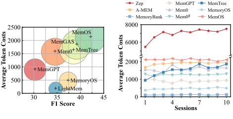
总体而言，更高的性能往往伴随着更多的 token 消耗，这反映了大量使用 LLM 所带来的收益。MemGAS 和 MemOS 虽然取得了较高的准确率，但产生了可观的 token 开销。相比之下，MemoryOS 和 LightMem 在性能与效率之间提供了更好的权衡，以显著更低的 token 成本取得了强劲的性能。随着记忆规模的增大，某些方法（如 MemTree 和 Zep）由于记忆更新开销不断增加，表现出较差的 token 成本可扩展性。
检索延迟随检索流水线复杂程度的不同而有显著差异。MemTree 实现了最低的检索延迟（24.5 ms），因为它将所有树节点视为一个统一的集合，直接检索相关节点而无需遍历树结构。LightMem 作为一种代表性的轻量级记忆方法，实现了第二低的延迟（78.1 ms）。相比之下，涉及查询时 LLM 调用的方法（例如从查询中抽取实体）通常会产生显著更高的检索延迟。
Exp.3. 上下文可扩展性分析。在本实验中，我们通过将 LONGMEMEVAL 的上下文长度从 50% 扩展到 200%，来研究各种记忆架构的上下文可扩展性。在长程交互中，随着信息密度的增长，记忆系统面临的主要挑战从简单的检索转向鲁棒的噪声抑制。我们在不同的上下文规模下评估各种架构，以考察它们在上下文增长时维持检索精度的能力。图 7a 展示了上下文可扩展性的总体趋势。随着上下文规模从 50% 扩展到 200%，几乎所有记忆架构的 F1 分数都呈现持续下降。这种性能衰减主要由无关信息密度的增加所驱动，它降低了检索过程中的信噪比。关于本实验的进一步分析见附录 B。
8
| Method.Method | Single-Hop.F1 | Single-Hop.BLEU-1 | Single-Hop.Acc | Multi-Hop.F1 | Multi-Hop.BLEU-1 | Multi-Hop.Acc | F1 | Temporal BLEU-1 | Acc | Open-Domain.F1 | Open-Domain.BLEU-1 | Open-Domain.Acc | Overall.F1 | Overall.BLEU-1 | Overall.Acc |
|---|---|---|---|---|---|---|---|---|---|---|---|---|---|---|---|
| Qwen3.5-9B | Qwen3.5-9B | Qwen3.5-9B | Qwen3.5-9B | Qwen3.5-9B | Qwen3.5-9B | Qwen3.5-9B | Qwen3.5-9B | Qwen3.5-9B | Qwen3.5-9B | Qwen3.5-9B | Qwen3.5-9B | Qwen3.5-9B | Qwen3.5-9B | Qwen3.5-9B | Qwen3.5-9B |
| A-MEM | 34.38 | 30.22 | 53.75 | 23.26 | 15.18 | 52.13 | 18.30 | 13.12 | 52.02 | 12.38 | 8.78 | 39.58 | 27.62 | 22.57 | 52.21 |
| MemoryBank | 45.05 | 39.09 | 71.70 | 36.93 | 28.77 | 78.01 | 27.29 | 22.20 | 54.52 | 13.83 | 10.05 | 38.54 | 37.92 | 31.87 | 67.21 |
| MemGPT | 38.97 | 33.32 | 54.34 | 25.11 | 17.45 | 50.00 | 16.57 | 13.47 | 41.74 | 14.99 | 10.99 | 34.38 | 30.27 | 24.88 | 49.68 |
| Mem0 | 34.66 | 29.75 | 63.26 | 29.69 | 21.36 | 68.79 | 42.68 | 36.97 | 61.68 | 20.66 | 14.70 | 45.83 | 34.55 | 28.78 | 62.86 |
| Mem0 𝑔 | 26.41 | 21.76 | 58.50 | 21.07 | 14.59 | 57.09 | 39.35 | 33.33 | 62.93 | 15.76 | 10.50 | 48.96 | 27.47 | 22.15 | 58.57 |
| MemoChat | 6.64 | 5.12 | 9.63 | 8.07 | 5.16 | 18.09 | 4.94 | 4.10 | 4.67 | 9.75 | 6.08 | 26.04 | 6.74 | 4.98 | 11.17 |
| Zep | 48.72 | 42.98 | 81.23 | 36.29 | 28.13 | 84.40 | 40.90 | 35.96 | 71.19 | 17.84 | 13.25 | 51.04 | 42.89 | 36.94 | 77.84 |
| MemTree | 43.42 | 36.24 | 69.23 | 34.21 | 22.57 | 71.92 | 33.08 | 27.60 | 60.97 | 26.54 | 21.28 | 58.30 | 38.53 | 31.01 | 72.85 |
| MemoryOS | 43.58 | 36.61 | 67.54 | 35.64 | 25.26 | 73.40 | 28.05 | 21.36 | 50.47 | 18.98 | 13.61 | 56.25 | 37.36 | 29.92 | 64.35 |
| MemOS | 45.38 | 40.16 | 74.53 | 38.41 | 30.60 | 80.50 | 43.45 | 39.24 | 72.26 | 21.49 | 14.97 | 52.08 | 42.21 | 36.65 | 73.75 |
| MemGAS | 51.55 | 45.26 | 78.00 | 36.28 | 28.43 | 76.60 | 15.33 | 11.42 | 36.76 | 19.47 | 15.23 | 46.88 | 39.21 | 33.25 | 67.21 |
| LightMem | 37.93 | 31.87 | 68.37 | 25.00 | 17.24 | 64.54 | 40.01 | 33.09 | 68.22 | 17.22 | 11.48 | 52.08 | 34.70 | 28.18 | 66.62 |
| Qwen3.5-27B | Qwen3.5-27B | Qwen3.5-27B | Qwen3.5-27B | Qwen3.5-27B | Qwen3.5-27B | Qwen3.5-27B | Qwen3.5-27B | Qwen3.5-27B | Qwen3.5-27B | Qwen3.5-27B | Qwen3.5-27B | Qwen3.5-27B | Qwen3.5-27B | Qwen3.5-27B | Qwen3.5-27B |
| A-MEM | 34.76 | 30.28 | 53.63 | 26.06 | 17.32 | 58.87 | 14.88 | 10.48 | 44.86 | 12.39 | 9.56 | 34.38 | 27.63 | 22.49 | 51.56 |
| MemoryBank | 46.56 | 40.24 | 75.51 | 40.38 | 32.10 | 78.72 | 34.38 | 28.49 | 61.37 | 18.69 | 14.59 | 43.75 | 41.15 | 34.70 | 71.17 |
| MemGPT | 50.98 | 44.54 | 72.53 | 32.08 | 22.89 | 62.41 | 20.85 | 16.95 | 49.53 | 18.29 | 14.53 | 40.62 | 39.20 | 32.95 | 63.90 |
| Mem0 | 41.11 | 35.38 | 71.94 | 36.96 | 28.13 | 74.47 | 52.97 | 46.33 | 74.45 | 22.73 | 17.25 | 50.00 | 41.68 | 35.20 | 71.56 |
| Mem0 𝑔 | 38.48 | 33.16 | 68.85 | 39.30 | 29.71 | 78.37 | 52.69 | 46.16 | 74.14 | 26.58 | 19.76 | 57.29 | 40.85 | 34.40 | 70.97 |
| MemoChat | 6.93 | 5.46 | 8.80 | 6.52 | 3.66 | 14.18 | 7.08 | 6.05 | 4.98 | 10.98 | 7.22 | 22.92 | 7.14 | 5.36 | 9.87 |
| Zep | 53.15 | 46.29 | 84.37 | 37.92 | 29.41 | 86.17 | 45.19 | 39.66 | 74.45 | 19.68 | 15.14 | 55.21 | 46.62 | 39.88 | 80.81 |
| MemTree | 44.30 | 37.21 | 71.38 | 37.79 | 28.90 | 76.14 | 34.56 | 28.32 | 67.56 | 26.18 | 19.97 | 57.91 | 39.95 | 32.76 | 75.64 |
| MemoryOS | 50.71 | 44.27 | 76.34 | 40.39 | 30.09 | 79.43 | 37.22 | 29.27 | 62.31 | 24.20 | 18.16 | 61.46 | 44.36 | 36.92 | 73.05 |
| MemOS | 52.04 | 44.92 | 82.33 | 38.48 | 29.43 | 78.01 | 55.98 | 48.64 | 81.36 | 27.97 | 20.72 | 60.42 | 48.88 | 41.35 | 79.97 |
| MemGAS | 51.95 | 45.73 | 76.10 | 40.97 | 32.33 | 82.62 | 25.52 | 21.64 | 39.88 | 21.18 | 15.93 | 48.96 | 42.51 | 36.40 | 68.05 |
| LightMem | 40.69 | 34.23 | 72.06 | 27.62 | 19.56 | 67.02 | 52.82 | 44.32 | 80.06 | 22.22 | 16.73 | 56.25 | 39.67 | 32.55 | 71.82 |
| Method.Method | Single-Hop.F1 | Single-Hop.BLEU-1 | Single-Hop.Acc | Multi-Hop.F1 | Multi-Hop.BLEU-1 | Multi-Hop.Acc | F1 | Temporal BLEU-1 | Acc | Open-Domain.F1 | Open-Domain.BLEU-1 | Open-Domain.Acc | Overall.F1 | Overall.BLEU-1 | Overall.Acc |
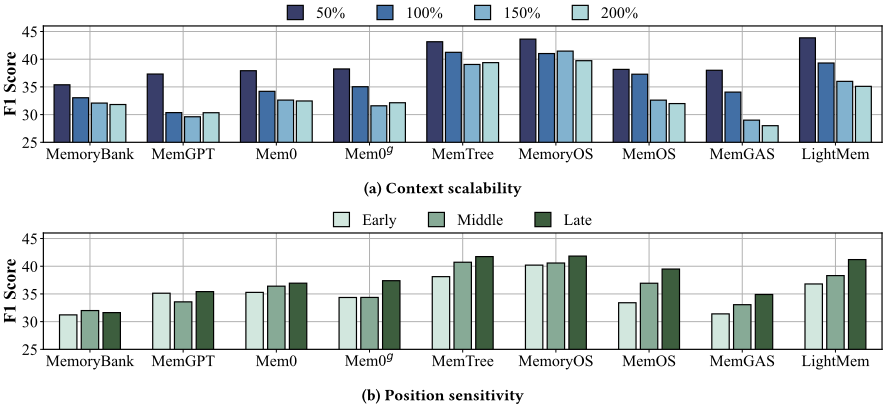
9
| Method | Without Query-Time LLM Calls.A-MEM | Without Query-Time LLM Calls.MemoryBank | Without Query-Time LLM Calls.MemGPT | Without Query-Time LLM Calls.Mem0 | Without Query-Time LLM Calls.Zep | Without Query-Time LLM Calls.MemTree | Without Query-Time LLM Calls.MemOS | Without Query-Time LLM Calls.MemGAS | Without Query-Time LLM Calls.LightMem | With Query-Time LLM Calls.Mem0 𝑔 | With Query-Time LLM Calls.MemoChat | With Query-Time LLM Calls.MemoryOS |
|---|---|---|---|---|---|---|---|---|---|---|---|---|
| Latency (ms) | 617.1 | 864.8 | 105.8 | 356.4 | 536.8 | 24.5 | 346.7 | 793.4 | 78.1 | 3783.1 | 1792.4 | 2329.6 |
| Method | Without Query-Time LLM Calls.A-MEM | Without Query-Time LLM Calls.MemoryBank | Without Query-Time LLM Calls.MemGPT | Without Query-Time LLM Calls.Mem0 | Without Query-Time LLM Calls.Zep | Without Query-Time LLM Calls.MemTree | Without Query-Time LLM Calls.MemOS | Without Query-Time LLM Calls.MemGAS | Without Query-Time LLM Calls.LightMem | With Query-Time LLM Calls.Mem0 𝑔 | With Query-Time LLM Calls.MemoChat | With Query-Time LLM Calls.MemoryOS |
| Model | Metric | Zep | MemoryOS | MemOS | LightMem |
|---|---|---|---|---|---|
| Qwen3.5-9B | F1 BLEU-1 | 42.89 | 37.36 29.92 | 42.21 | 34.70 28.18 |
| F1 | 36.94 | 36.65 | |||
| Qwen3.5-27B | BLEU-1 | 46.62 39.88 | 44.36 36.92 | 48.88 41.35 | 39.67 32.55 |
| DeepSeek-V4-Flash | F1 | 43.16 | 42.82 | 48.52 | 38.88 |
| BLEU-1 | 38.71 | 35.31 | 40.11 | 31.69 | |
| GPT-5.4-mini | F1 | 50.10 | 46.66 | 50.93 | 40.64 |
| GPT-5.4-mini | BLEU-1 | 41.69 | 38.85 | 42.45 | 32.72 |
| Model | Metric | Zep | MemoryOS | MemOS | LightMem |
Exp.4. 位置敏感性分析。在本实验中，我们通过将关键证据放置在上下文的早期（前 1/3）、中期（中间 1/3）或后期（后 1/3）部分，来评估关键证据的位置如何影响 LONGMEMEVAL 各变体上的检索与推理。当证据在上下文中出现得越早，记忆系统就必须跨越更大的时间间隔，并应对来自后续对话的日益增多的干扰。该实验检验各架构是对历史记录保持一致的访问能力，还是表现出对近期输入的偏向。如图 7b 所示，随着支持证据与查询之间的时间距离增大，在整体层面可以观察到明显的近因偏差（recency bias）。本实验的进一步分析见附录 B。
Exp.5. LLM 骨干模型对比。在本实验中，我们在不同的 LLM 骨干模型上评估了若干记忆方法。具体而言，我们从每种设计范式中选取具有代表性且性能优异的方法来进行此次跨骨干模型评估。因此，我们排除了较为简单的基线方法，以聚焦于具有非平凡记忆架构的方法。结果呈现在表 6 中。总体而言，大多数方法在闭源的 GPT-5.4-mini 骨干模型上取得了最佳性能。在开源模型中，Qwen3.5-27B 在各方法上总体优于 DeepSeek-V4-Flash。如 Exp.1 所讨论的，将 Qwen3.5 从 9B 扩展到 27B 为所有记忆方法带来了显著提升，这表明现有记忆架构仍在很大程度上依赖于骨干模型的推理能力。
Exp.6. 新的 SOTA 算法。基于上述分析，我们设计了一种新的记忆框架，其在相同实验设置下于被评估的代表性记忆基线中取得了最先进（SOTA）的性能，同时保持了较低的 token 开销。受 MemTree 与 MemOS 出色性能的启发，我们将二者的多粒度树状组织与 MemoryOS 的分层记忆存储相结合。为降低树更新的 token 开销，我们进一步采用段级处理来替代对单个对话轮次的处理。这一设计不仅降低了更新成本，还保持了语义连贯性，从而带来了性能提升 [83, 116]。详细的工作流程与算法见附录 C。
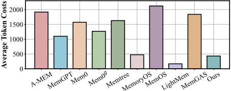
| Method | LOCOMO.F1 | LOCOMO.BLEU-1 | LONGMEMEVAL.F1 | LONGMEMEVAL.BLEU-1 |
|---|---|---|---|---|
| Zep | 42.89 | 36.94 | - | - |
| MemTree | 38.53 | 31.01 | 41.24 | 34.69 |
| MemoryOS | 37.36 | 29.92 | 41.02 | 35.61 |
| MemOS | 42.21 | 36.65 | 37.29 | 30.66 |
| LightMem | 34.7 | 28.18 | 39.31 | 32.49 |
| Ours | 43.4 | 37.36 | 46.84 | 39.83 |
| Method | LOCOMO.F1 | LOCOMO.BLEU-1 | LONGMEMEVAL.F1 | LONGMEMEVAL.BLEU-1 |
| Method Variants | SH | MH | TR | OK | Overall |
|---|---|---|---|---|---|
| Ours | 49.63 | 36.94 | 39.86 | 19.69 | 43.4 |
| w/o Tree | 45.82 | 35.23 | 31.89 | 14.25 | 39.01 |
| w/o SP | 47.97 | 34.99 | 35.24 | 19.2 | 41.15 |
| w/o HM&SP( MemTree ) | 43.42 | 34.21 | 33.08 | 26.54 | 38.53 |
| w/o Tree & SP ( MemoryOS ) | 43.58 | 35.64 | 28.05 | 18.98 | 37.36 |
| w/o Tree, w/ Graph | 45.52 | 33.68 | 40.06 | 19.59 | 40.6 |
| w/o Tree & SP, w/ Graph | 45.97 | 26.84 | 40.88 | 21.59 | 39.89 |
| Method Variants | SH | MH | TR | OK | Overall |
表 7 报告了性能指标，图 8 对比了平均 token 成本。我们的方法在两个基准测试上均取得了最佳的整体性能，并在所有任务类别中都给出了极具竞争力的结果，同时将计算开销保持在每段对话少于 450 个 token 的极低水平。
| Method. | Bundled Web.Shopping.SR | Bundled Web.Shopping.PS | Group Travel.Planning.SR | Group Travel.Planning.PS | Group Travel.Planning.sPS | Progressive Web.Search.Acc | Progressive Web.Search.#Search | Formal Reasoning.Math.SR | Formal Reasoning.Math.PS | Formal Reasoning.Phys.SR | Formal Reasoning.Phys.PS | All Task Avg SR.. |
|---|---|---|---|---|---|---|---|---|---|---|---|---|
| A-MEM | 0 | 31.03 | 0 | 0.27 | 6.32 | 2.26 | 7.04 | 10 | 25.92 | 35 | 56.54 | 9.45 |
| MemoryBank | 0 | 32.08 | 0 | 0.21 | 5.97 | 5.43 | 6.09 | 17.5 | 24.49 | 35 | 54.04 | 11.59 |
| MemGPT/Letta | 0 | 36.45 | 0 | 0 | 4.82 | 3.62 | 7.09 | 20 | 28.58 | 20 | 49.04 | 8.72 |
| Mem0 | 0 | 31.91 | 0 | 0 | 7.48 | 5.43 | 7.78 | 10 | 23.49 | 30 | 49.18 | 9.09 |
| Mem0 𝑔 | 0 | 32.5 | 0 | 0 | 7.34 | 4.98 | 7.6 | 12.5 | 24.47 | 10 | 46.97 | 5.5 |
| Zep | 0 | 27.56 | 0 | 0.05 | 6.6 | 2.26 | 4.49 | 15 | 23.61 | 45 | 52.42 | 12.45 |
| MemTree | 0 | 28.89 | 0 | 0.16 | 6.29 | 2.26 | 4.96 | 12.5 | 24.54 | 30 | 46.22 | 8.95 |
| MemoryOS | 0 | 30.22 | 0 | 0.43 | 8.02 | 2.26 | 8.13 | 15 | 21.8 | 15 | 42.51 | 6.45 |
| MemOS | 0 | 26.44 | 0 | 0.05 | 4.09 | 1.81 | 8.33 | 15 | 24.78 | 15 | 32.88 | 6.36 |
| MemGAS | 0 | 18.67 | 0 | 0 | 5.9 | 3.62 | 6.25 | 15 | 21.31 | 40 | 45.92 | 11.72 |
| LightMem | 0 | 30.11 | 0 | 0 | 0.08 | 1.36 | 10.51 | 7.5 | 20.93 | 25 | 35.26 | 6.77 |
| Method. | Bundled Web.Shopping.SR | Bundled Web.Shopping.PS | Group Travel.Planning.SR | Group Travel.Planning.PS | Group Travel.Planning.sPS | Progressive Web.Search.Acc | Progressive Web.Search.#Search | Formal Reasoning.Math.SR | Formal Reasoning.Math.PS | Formal Reasoning.Phys.SR | Formal Reasoning.Phys.PS | All Task Avg SR.. |
我们进一步对三个关键设计进行了组件级消融实验：基于树的组织结构（Tree）、分层记忆分离（HM）和分段级处理（SP），结果如表 8 所示。注意，SH、MH、TR 和 OK 分别表示单跳、多跳、时间推理和开放域知识问题。由于 SP 在从短期记忆向中期记忆转换的过程中发挥作用，移除 HM 必然会同时移除 SP。移除 Tree 或 SP 分别使整体 F1 分数下降 4.39 分和 2.25 分，而仅保留 Tree（MemTree）或 HM（MemoryOS）则会导致更大的性能下降。这些结果证明了三个组件各自的贡献，其中时间推理是受影响最大的问题类别。
我们还遵循 Zep 的知识图谱构建流程，在保持框架其余部分不变的情况下，将 Tree 替换为 Graph。将 Tree 替换为 Graph 使整体 F1 分数从 43.40 降至 40.60，表明基于树的组织结构能够提供更强且更均衡的整体性能。尽管如此，Graph 在时间推理问题上表现更好，这表明其节点和边中保留的时间信息在建模时间依赖关系方面更为有效。
Exp.7. 对检索 top𝑘 的敏感性。我们在 LOCOMO 上使用不同的检索 top𝑘 值（𝑘 ∈ { 1 , 3 , 5 , 10 , 15 }）对代表性方法进行评估，如图 9 所示。当 k 从 1 增加到 10 时，性能显著提升，而当 k 超过 10 后，增益变得微乎其微。基于这一观察，并遵循先前工作 [43, 89, 115] 采用的默认设置，除非另有说明，我们默认使用 k=10。
Exp.8. 智能体记忆任务上的评估。在本实验中，我们在 MemoryArena 上评估代表性的记忆方法，该基准测试用于衡量记忆增强智能体在智能体-环境交互中的表现。结果如表 9 所示。总体而言，现有方法在实现可靠的任务完成方面仍面临重大挑战。大多数方法取得的成功率（SR）分数较低，尤其是在 Bundled Web Shopping 和 Group Travel Planning 上，SR 为零表示智能体未能完成任何完整的任务轨迹。Zep 以 12.45 的平均 SR 取得了最佳整体性能，其次是 MemGAS 和 MemoryBank。各任务上普遍较低的成功率表明，现有记忆机制仍不足以支持长程的智能体交互。
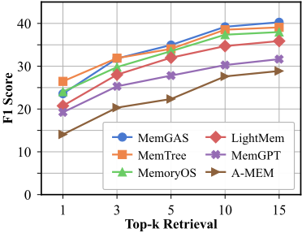
我们基于观察总结了对从业者的经验教训（L），并提出切实可行的研究机遇（O）。
11
| Work | Primary Type | Design Taxonomy | Unified Multi-method Evaluation | Component-Performance Linkage | Evidence-guided Design Synthesis |
|---|---|---|---|---|---|
| Memory in the Age of AI Agents [34] | Survey | ✓ | ✗ | ✗ | ✗ |
| The AI Hippocampus: How Far Are We From Human Memory? [40] | Survey | ✓ | ✗ | ✗ | ✗ |
| A Survey on the Memory Mechanism of Large Language Model Based Agents [125] | Survey | ✓ | ✗ | ✗ | ✗ |
| Rethinking Memory Mechanisms of Foundation Agents in the Second Half [37] | Survey | ✓ | ✗ | ✗ | ✗ |
| LOCOMO [72] | Benchmark | ✗ | ✗ | ✓ | ✗ |
| LongMemEval [111] | Benchmark | ✓ | ✗ | ✓ | ✓ |
| MemoryAgentBench [35] | Benchmark | ✗ | ✓ | ✗ | ✗ |
| MemoryArena [29] | Benchmark | ✗ | ✓ | ✗ | ✗ |
| Memory in the LLM Era | Empirical Study | ✓ | ✓ | ✓ | ✓ |
| Work | Primary Type | Design Taxonomy | Unified Multi-method Evaluation | Component-Performance Linkage | Evidence-guided Design Synthesis |
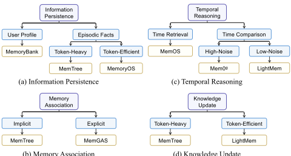
(d) 知识更新
(b) 记忆关联
防止信息提取或检索阶段的语义损失。
在本论文中，我们对现有的记忆（memory）方法进行了深入的实验评估与比较。我们首先提出了一个统一的模块化框架，将记忆机制抽象为四个核心记忆模块——信息提取、记忆管理、记忆存储和信息检索。在该框架下，我们在三个基准测试（benchmark）数据集上对代表性的记忆方法进行了系统性评估，并进一步开展了多维度实验，以研究 token 成本效率、上下文可扩展性、证据位置敏感性以及 LLM 骨干模型依赖性。基于实验结果与分析，我们通过组合现有技术开发了一种新的记忆变体，该变体在保持低开销的同时实现了较高的准确率。最后，我们总结了所获得的经验教训，并提出了能够促进未来研究的实用研究机会。
13
给定上述对话，请从当前消息中提取显式或隐式提及的实体节点。请注意，务必将说话者/行为者提取为第一个节点，并提取当前消息中提及的其他重要实体、概念或行为者。
实体：
{entities}
给定上述消息和实体，请从当前消息中提取与所列实体相关的所有事实。请注意，仅提取所提供实体之间的事实，且每条事实应表示两个不同节点之间的明确关系。
本节详细介绍了我们评估中使用的若干提示模板。基于图的信息提取的示例提示如图 11 所示，用于 LLM-as-a-judge（以大语言模型作为评判）的提示详见图 14，而用于后处理答案简化的提示则见图 12。
本节对这三个基准测试（benchmark）进行详细介绍。
LOCOMO benchmark [72] 由 10 个用于问答评估的长程对话组成。每个对话平均包含 198.6 个问题，横跨 27.2 个会话，以及两位说话者之间约 588.2 个对话轮次。具体任务类别定义如下：
LONGMEMEVAL benchmark [111] 包含 500 个高质量问题，旨在评估四项核心长期记忆能力。每个问题都植根于一段专门的对话历史，该历史基于用户与 AI 的长期交互，平均包含 50.2 个会话，长度约为 115,000 个 token。LONGMEMEVAL 对记忆任务进行分类，以评估以下几个方面：
MemoryArena benchmark [29] 由多会话智能体任务组成，旨在评估智能体（agent）与环境交互中的记忆使用。每个任务平均包含 6.9 个明确相互依赖的子任务以及约 57 个智能体动作。任务被划分为四种类型：
你的任务是充当答案简化器（answer simplifier）。我将给你一个问题和一个以完整句子表述的答案。你必须将答案缩减至其最关键的组成部分。
请遵循以下规则：
以下是需要简化的问题和答案：
■
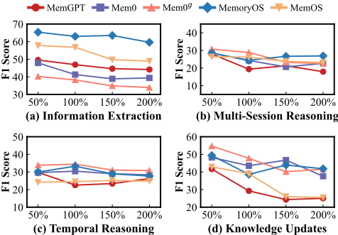
共享或个性化偏好。智能体必须通过参考先前旅行者的计划并解决跨旅行者的约束（例如加入一个已有的活动，或相对于另一位旅行者的选择来选定某个选项）来生成每个新的行程。
因此，它评估了智能体记忆的若干互补方面，包括跨会话状态保持、工具辅助交互、长时程约束跟踪，以及对先前获取的信息或推理结果的复用。
在实现方面，我们遵循官方的 MemoryArena 源代码和评估流程，并使用 Qwen3.5-9B 作为大语言模型（LLM）骨干网络。我们主要报告任务成功率（SR）和任务进度分数（PS）。给定 𝑁 个任务，其中任务 𝑆 𝑖 包含 | 𝑆 𝑖 | 个有序子任务，且其中有 | 𝑆 pass 𝑖 | 个被成功完成，这些指标定义为：
以及
SR 衡量端到端的任务完成情况，而 PS 则为相互依赖的子任务中的部分进度提供更细粒度的度量。对于 Group Travel Planning，我们额外报告软进度分数（sPS），其中每个子任务根据其所满足约束的比例获得部分得分。子任务得分先在每个任务内部取平均，然后再在所有任务上取平均。对于 Progressive Web Search，我们报告准确率（Accuracy），以每个任务中最终搜索查询的正确性来衡量；以及 #Search，以用于回答最终整合查询的搜索工具调用次数来衡量。
LONGMEMEVAL 非常适合受控评估：它通过会话池实现了可配置的上下文长度，该会话池提供主题相近的历史会话而不会引入冲突信息；并且每个样本仅关联单个问题，使得相应的真值证据定义明确。基于这些特性，我们构建了原始数据集（LONGMEMEVAL 𝑆）的一组变体，用于评估上下文可扩展性和位置敏感性。
对于上下文可扩展性，我们构建了默认上下文长度 50%、150% 和 200% 的变体。具体而言，对于 50% 变体，我们在会话级粒度上剪除一半的历史对话，同时保留真值会话；对于 150% 和 200% 变体，我们将从会话池中采样得到的额外会话追加到原始对话历史的末尾。
对于位置敏感性，我们通过重新定位真值会话来生成 LONGMEMEVAL 𝑆 的位置变化变体。具体而言，我们将真值会话从其原始位置提取出来，并重新插入到三个等分片段之一的
19
你的任务是将某个问题的答案标注为 ' CORRECT ' 或 ' WRONG '。你将获得以下数据：(1) 一个问题（由一个用户向另一个用户提出），(2) 一个 'gold'（真值）答案，(3) 一个生成的答案，你需要将其评分标注为 CORRECT / WRONG 。
该问题的目的在于询问某个用户基于他们之前的对话应当了解另一个用户的某些事情。gold 答案通常是一个简洁而简短的答案，其中包含所涉及的主题，例如：
问题：你还记得我上次去夏威夷时得到了什么吗？
生成的答案可能会长得多，但你在评分时应当宽容——只要它涉及与 gold 答案相同的主题，就应计为 CORRECT 。
对于与时间相关的问题，gold 答案将是一个具体的日期、月份、年份等。生成的答案可能会长得多，或者使用相对时间表述（如 'last Tuesday' 或 'next month'），但你在评分时应当宽容——只要它指的是与 gold 答案相同的日期或时间段，就应计为 CORRECT 。即使格式不同（例如 'May 7th' 与 '7 May'），只要是同一日期，就应视为 CORRECT 。
首先，给出一段简短的（一句话）推理说明，然后以 CORRECT 或 WRONG 结尾。不要在回答中同时包含 CORRECT 和 WRONG，否则会破坏评估脚本。
只需以 json 格式返回标签 CORRECT 或 WRONG，键名为 'label'。
对话：前 1/3（ Early ）、中间 1/3（ Middle ）以及最后 1/3（ Late ）。
本节针对不断增长的上下文长度，对上下文可扩展性进行了扩展分析。
扩展实验结果揭示了一种根源于操作复杂度的性能分化。MemOS 和 MemGPT 等方法实现了“LLM 即操作系统”（LLM-as-OS）范式，要求大语言模型（LLM）通过复杂的工具调用自主管理记忆。当规模增加到 200% 时，扩大的候选空间显著提高了 LLM 准确推理并执行这些管理指令的难度，导致更高的工具调用失败率和索引冲突率。相比之下，MemoryOS 通过采用显式的基于规则的分层管理来降低智能体（Agent）的认知负荷。通过将组织逻辑从 LLM 卸载到确定性框架中，MemoryOS 保持了高稳定性，这表明通过精心设计来简化智能体的内部管理开销对于稳健扩展至关重要。
不同的任务类别对扩展压力表现出不同的敏感性。如图 13 所示，知识更新（Knowledge Update, KU）尤为敏感，表现出急剧的性能衰减，这是因为记忆容量的增加提高了冲突记录的密度。由于 KU 要求模型在相互排斥的版本中识别最新事实，更多过时候选的存在直接加剧了检索干扰。相反，时序类任务保持相对稳定，因为它们依赖于事件的相对顺序，而即使背景数据量不断增长，这种顺序在结构上依然清晰可辨。与 KU 中的版本冲突不同，事件的时间先后顺序不易因上下文的增加而受到损害。
表 11：LONGMEMEVAL 上代表性记忆机制在信息抽取各子任务中的位置敏感性分析（F1 分数）。
| Method | Position | user | assistant | preference |
|---|---|---|---|---|
| Mem0 𝑔 | Early | 63.8 | 23.35 | 11.39 |
| Mem0 𝑔 | Middle | 57.6 | 20.39 | 12.87 |
| Mem0 𝑔 | Late | 74.6 | 20.74 | 12.9 |
| Mem0 𝑔 | Improvement | 10.8 | -2.61 | 1.51 |
| MemTree | Early | 59.01 | 55.42 | 10.42 |
| MemTree | Middle | 66.91 | 67.61 | 12.07 |
| MemTree | Late | 71.49 | 65.41 | 11.33 |
| MemTree | Improvement | 12.48 | 9.99 | 0.91 |
| MemOS | Early | 69.4 | 49.09 | 12.64 |
| MemOS | Middle | 73.81 | 56.78 | 13.72 |
| MemOS | Late | 79.85 | 58.66 | 13.12 |
| MemOS | Improvement | 10.45 | 9.56 | 0.48 |
| Method | Position | user | assistant | preference |
本节对位置敏感性进行了扩展分析，将关键证据放置在不同的位置进行考察。
在整体层面上，随着支持证据与查询之间的时间距离增大，可以观察到明显的近因偏置（recency bias）。如图 7b 所示，当证据被放置在较晚的会话而非较早的会话中时，大多数方法都能获得更高的整体 F1 分数。随着相关证据出现之后累积的中间对话越来越多，维持长程信息的一致性与检索变得愈发具有挑战性。
记忆更新策略对位置敏感性有显著影响。对于 A-MEM 这类方法，动态的记忆修订可能会覆盖较早的证据，使早期会话中的信息容易受到后续交互的影响。MemTree 和 MemOS 等分层方法则表现出不同的机制：尽管原始对话被保留在叶节点中，但对更高层级摘要的更新会放大近期信息的影响力，从而扩大 Late-Early 差距。相比之下，MemoryOS 通过跨记忆层级的分阶段转移，更加均衡地保留了历史信息。较早的证据在各层级内部保持相对独立，而不是被反复地与后续信息合并。因此，后续交互不会直接重塑较早的证据表示，这解释了 MemoryOS 的 Late-Early 差距较小的原因。
位置敏感性高度依赖于类别。我们在表 11 中考察了三种代表性方法在信息抽取各子任务上的表现。瞬态的、会话局部的信息比持久性特质表现出更强的位置敏感性。用户抽取和助手抽取任务显示出显著的 Early-to-Late 变化，而偏好抽取则保持稳定。这表明位置敏感性与信息的持久性相关：瞬态的会话局部细节更容易受到后续干扰的影响，而持久的偏好特质受证据位置迁移的影响较小。
输入：当前查询 𝑞，短期记忆 M 𝑆，中期记忆 M 𝑀，长期记忆树 M 𝐿，短期容量阈值 𝜏，热度阈值 𝜃，束宽 𝑘
输出：更新后的记忆 ( M ′ 𝑆 , M ′ 𝑀 , M ′ 𝐿 )，响应 𝑟
// (1) 信息检索
1 C 𝑆 ← M 𝑆 ; // 检索整个短期记忆
2 C 𝑀 _ 𝑓 𝑙𝑎𝑡 ← VectorSearch ( M 𝑀 . high-level-nodes , 𝑞 ) ;
3 C 𝑀 _ 𝑏𝑒𝑎𝑚 ← BeamSearch ( M 𝑀 . tree , 𝑞, 𝑘 ) ;
4 C 𝐿 ← VectorSearch ( M �
本节详细介绍了我们新设计方法的完整工作流程，相应算法在算法 2 中给出。
如图 15 所示，新消息首先被写入短期记忆，并通过先进先出（FIFO）队列进行管理。当短期记忆达到容量上限时，最旧的消息会基于语义相似度被划分为若干片段（segment），并转移至中期记忆。在该层级中，我们维护一棵记忆树，其中每个叶节点代表一个片段——其中保存了针对其所含消息生成的摘要——而父节点则提供对其各自子节点的聚合摘要。与轮次级处理相比，这种片段级粒度显著降低了 token 开销。对于每个片段叶节点，我们基于访问频率和新近程度计算热度分数（heat score）；热度分数高的片段会被提升至长期记忆。
在信息检索阶段，我们分别从三个存储层级独立地进行检索。短期记忆被完整检索，以保持上下文连续性。对于中期记忆，我们采用双模式检索机制：高层节点的语义通过扁平的基于向量的相似度搜索进行匹配，而原始消息则通过束搜索（beam search）进行检索——该搜索从根节点开始遍历，在每一层选择最相似的 𝑘 个节点，最终到达作为片段叶节点子节点存储的原始消息。长期记忆则通过标准的基于向量的相似度检索进行访问。
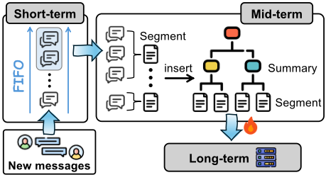
21
| 0 | 1 | 2 |
|---|---|---|
| Question: | When did Caroline go to the LGBTQ support group? | When did Caroline go to the LGBTQ support group? |
| Answer: | 7 May 2023 | |
| Response type | Predicted answer | F1 BLEU-1 |
| 0 | 1 | 2 |
（之前 Caroline 去了 LGBTQ
（之后
错误 支持小组于2023年5月7日。
2023年5月7日
0.3750
0.2307
0.8571
0.7500
2023年5月8日
对话：我知道冥王星被正式归类为矮行星，但在我所教授的天文学课程中，我们仍将冥王星归类为行星。
问：用户在其课程中如何归类冥王星？答：行星。
用户将冥王星归类为行星。
LLM 评判：
错误，因为冥王星被正式归类为矮行星。
从而支持跨记忆层次结构的高效整合与重构。
O4. 在复杂查询场景中，依赖单一固定的检索策略可能十分脆弱，并可能导致任务失败。不同的查询往往需要不同的检索粒度和机制。然而，现有的记忆系统并未考虑这一问题，因此设计一个能够动态选择并适配检索策略、以应对多样化记忆-查询上下文的检索路由规划器，是一个有趣的研究问题。
O5. 现有的记忆基准测试（benchmark），如 LOCOMO 和 LONGMEMEVAL，在预先收集的静态交互历史上评估记忆方法，这无法反映真实世界记忆的连续性和不断演化的特性。它们也未能捕捉人类记忆的关键特性，例如对近期更新的偏好以及对反复提及信息的强化。此外，尽管 LOCOMO 中包含了稀疏的视觉元素，这些 benchmark 仍然严格以文本为中心。开发更具挑战性、以交互为驱动且更加全面的多模态 benchmark，以更好地反映真实的记忆形成与使用场景，是一个有意义的研究方向。
值得注意的是，LLM-as-a-judge 评估并非完全可靠，因为其结果可能受到评判模型的能力、评估提示（prompt）以及其他因素的影响 [25, 49, 51, 126]。图 16 展示了该问题的一个具体示例。因此，我们将其作为补充指标，而非主要评估指标。
Token 级 F1 衡量生成答案 𝑌 与其参考答案 𝑌 ∗ 之间的 token 重叠程度。具体而言，精确率（precision）、召回率（recall）和 F1 的计算方式如下
其中，| 𝑌 ∩ 𝑌 ∗ | 表示重叠 token 的数量，重复 token 按其在两个答案中出现次数的最小值计算。BLEU-1 衡量带简短惩罚（brevity penalty）的截断一元语法（unigram）精确率，其计算方式如下
其中
而简短惩罚定义为
此处，𝑤 表示一个一元语法 token，Count 𝑌 ( 𝑤 ) 和 Count 𝑌 ∗ ( 𝑤 ) 分别表示 𝑤 在生成答案和参考答案中出现的次数。
因此，F1 和 BLEU-1 不仅对生成答案是否包含正确信息敏感，还对其措辞和冗长程度敏感。即使关键答案正确，额外的解释性内容也可能引入不匹配的 token，从而降低词汇层面的精确率。这一问题尤为突出，因为不同记忆（memory）方法的官方实现使用了不同的响应提示（prompt），导致答案在长度和风格上存在差异。为了减少这种由提示引起的输出风格偏差，并更准确地比较答案所包含的信息，我们在计算 F1 和 BLEU-1 之前，对所有方法的响应应用相同的简化流程。表 12 给出了一个具体示例，说明简化如何影响这两项指标：去除语义上冗余的细节后，正确响应的得分大幅提升，从而避免其排名低于一个错误但在词汇上更接近的答案。表 13 报告了不同方法在简化前后的 F1 和 BLEU-1 得分，从而直接量化了简化对评估结果的影响。
| Method | F1.Before | F1.After | F1.Δ | BLEU-1.Before | BLEU-1.After | BLEU-1.Δ |
|---|---|---|---|---|---|---|
| A-MEM | 26.9 | 27.62 | 0.72 | 21.98 | 22.57 | 0.59 |
| Mem0 | 31.4 | 34.55 | 3.15 | 25.32 | 28.78 | 3.8 |
| Zep | 35.93 | 42.89 | 6.96 | 30.78 | 36.94 | 6.16 |
| MemTree | 35.36 | 38.53 | 3.17 | 29.88 | 31.01 | 1.13 |
| MemoryOS | 35.72 | 37.36 | 1.64 | 26.15 | 29.92 | 3.77 |
| LightMem | 29.88 | 34.7 | 4.82 | 24.79 | 28.18 | 3.39 |
| Method | F1.Before | F1.After | F1.Δ | BLEU-1.Before | BLEU-1.After | BLEU-1.Δ |
22
| 0 | 1 | 2 | 3 |
|---|---|---|---|
| Organization | Vector | Graph | Tree |
| 0 | 1 | 2 | 3 |
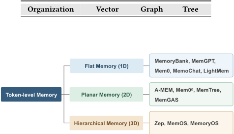
在本节中，我们从两个互补的视角解释所选基线方法的覆盖情况：一是《Memory in the Age of AI Agents: A Survey》[34] 中的分类体系，二是我们的四阶段框架。
遵循《Memory in the Age of AI Agents: A Survey》的分类方式——该综述将智能体记忆分为词元级（token-level）记忆、参数化（parametric）记忆和潜在（latent）记忆——我们聚焦于基于文本的词元级记忆。与参数化记忆和潜在记忆不同，这些方法可以在相同的冻结 LLM 设置下进行评估，而无需额外的训练或模型修改。在词元级记忆内部，该综述进一步将现有方法分为扁平记忆（Flat Memory，1D）、平面记忆（Planar Memory，2D）和分层记忆（Hierarchical Memory，3D）。如图 17 所示，对于扁平记忆，我们选择了具有代表性的方法，涵盖经典对话记忆（如 MemoChat 和 MemoryBank）、被广泛采用的设计（如 Mem0）、面向效率的设计（如 LightMem）以及受操作系统启发的记忆管理（如 MemGPT）。对于平面记忆，我们纳入了联想记忆（如 A-MEM）、基于知识图谱的记忆（如 Mem0g）、树状结构记忆（如 MemTree）以及多粒度图记忆（如 MemGAS）。对于分层记忆，我们选择了具有代表性的多层级设计，包括 MemoryOS、MemOS 以及分层时序图架构 Zep。
除了这一基于综述的分类体系之外，所选方法还覆盖了我们框架全部四个阶段中的多样化设计选择，如表 1 所总结。具体而言，在信息提取方面，所选方法涵盖了在消息级别（如 MemoryBank）和片段级别（如 MemoryOS）上的直接归档、基于摘要的提取（如 A-MEM）、基于图的提取（如 Zep 和 Mem0g），以及多粒度提取设计 MemGAS。在记忆管理方面，我们纳入了具有代表性的智能体式方法（如 Mem0 和 LightMem）以及受操作系统启发的方法（如 MemGPT 和 MemOS）。在记忆存储方面，如表 14 所示，所选方法涵盖了以组织为中心和以表示为中心两个维度上的代表性组合。在信息检索方面，它们涵盖了基于词法的检索、基于向量的检索和基于结构的检索，以及结合多种检索机制的混合设计，例如 Zep 和 MemGAS。
在本节中，我们为记忆架构选择路线图提供支撑性分析。该路线图涵盖长期记忆系统的四大核心能力：信息持久化（Information Persistence）、记忆关联（Memory Association）、时序推理（Temporal Reasoning）和知识更新（Knowledge Update）。这些能力源自 LOCOMO 和 LONGMEMEVAL 等广泛使用的基准测试（benchmark）中的主要问答（QA）类别。它们从互补的视角刻画了长期记忆需求，并共同覆盖了常见的 QA 场景。方法推荐主要基于不同方法在 LOCOMO 和 LONGMEMEVAL 上的综合表现。当多种方法取得相当的效果但各自更适合不同场景时，我们会进一步考虑 token 消耗以及在不同噪声水平下的鲁棒性等因素，从而给出针对特定场景的推荐。
对于信息持久化，用户画像场景需要能够建模并维护用户偏好的记忆机制，以 MemoryBank 为代表。对于涉及从历史交互中检索特定信息的情节性事实（episodic facts），在可接受较高 token 开销时，MemTree 是合适的选择；而 MemoryOS 的分层设计则提供了更节省 token 的解决方案。
对于记忆关联，路线图区分了隐式关联与显式关联。隐式关联以 LONGMEMEVAL 的多会话推理（Multi-Session Reasoning）任务为代表，需要整合分布于不同会话和不同抽象层次上的语义相关证据；MemTree 通过其多粒度树状组织支持这一场景。显式关联对应 LOCOMO 的多跳（Multi-Hop）问题，需要在连接多个记忆单元的结构化路径上进行多跳推理，MemGAS 通过其多粒度图组织提供了相应支持。
对于时序推理，路线图区分了两类具有代表性的问题。时间检索主要以 LOCOMO 中的时序问题为代表，侧重于检索与特定时间参照相关联的信息。对于这类问题，MemOS 取得了最强的性能。时间比较主要以 LONGMEMEVAL 的时序推理任务为代表，需要对多条信息之间的时间关系进行比较。正如我们修订版论文第 8.2 节（Exp.3. Context Scalability Analysis）所讨论的，增加上下文长度会引入更高的噪声水平。因此，我们进一步区分低噪声与高噪声两种设置。在低噪声历史下，LightMem 表现最佳；而在高噪声历史下，Mem0 𝑔 实现了更鲁棒的性能。
对于知识更新，主要的权衡在于更新效果与 token 效率之间。当可接受较大的更新开销时，MemTree 能提供更好的更新性能；而在 token 预算紧张的情况下，LightMem 的轻量级更新设计更为合适。
缺失的分数表明，在我们统一的实验环境中，Zep 未能在两天内完成在 LONGMEMEVAL 上的记忆构建。Zep 文档 1 中报告的 “fast” 性能指的是检索延迟，该指标已在表 5 中单独评估，而非索引构建时间。在我们的实验中，Zep 的平均检索延迟为 536.8 ms，高于其文档中报告的低于 200 ms 的延迟。造成这一差异的原因在于，为了确保统一且受控的实验设置，我们使用的是随 Zep 论文发布的开源实现，而非其生产环境 API，后者经历了多次后续迭代与优化。在索引构建方面，在我们的实验设置下，Zep 为 LOCOMO 构建索引需要数小时。而对于文本总量超过 LOCOMO 100 倍的 LONGMEMEVAL，其索引构建未能在两天内完成。
23
为澄清这一问题，我们进一步分析索引构建开销的来源。具体而言，Zep 将每条消息表示为一个 episode，并通过 Graphiti 2 增量式地更新时序知识图谱。对于每个 episode，它会执行实体与事实抽取、实体消解、事实去重以及冲突处理。随着对话的增长，不断扩展的图谱增大了这些操作的候选空间，而更长的上下文则需要在 LLM 提示中处理更多信息。因此，越靠后的 episode 通常会产生越高的处理成本，而在 LONGMEMEVAL 上反复应用这一流程会带来可观的累积构建开销。
1 https://www.getzep.com/
2 https://github.com/getzep/graphiti
24